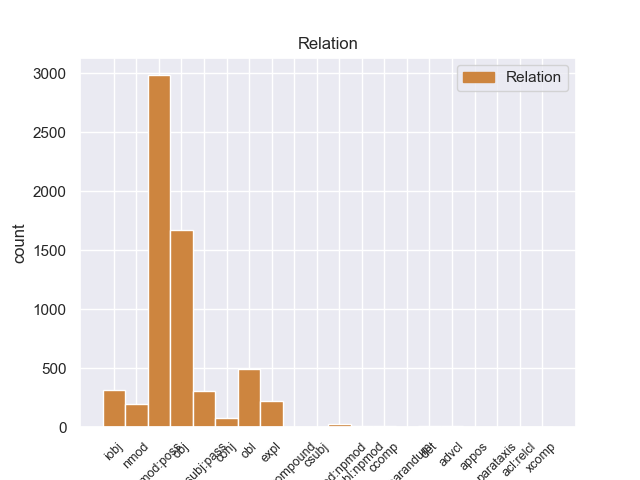
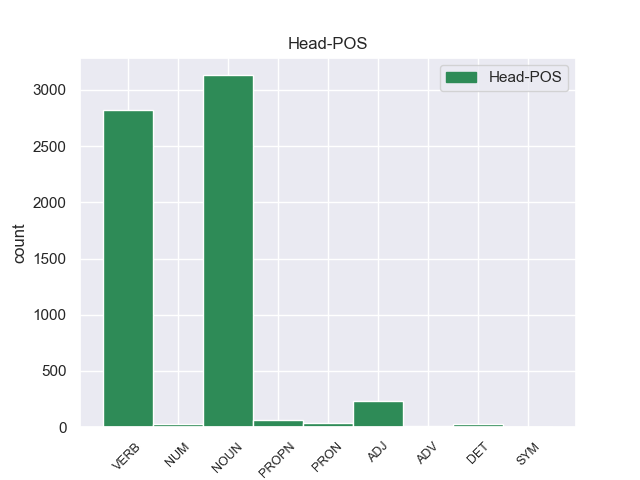
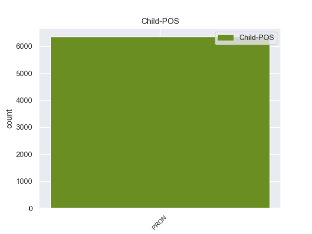

Distribution of features within this leaf



Morphosyntax Rules sorted by frequency.
- When the dependent token is the possessive nominal modifier(nmod:poss) of the head token, and the dependent token is PRON, the Person needs to be 3.
1 Of _ _ _ _ 0 _ _ _
2 course _ _ _ _ 0 _ _ _
3 , _ _ _ _ 0 _ _ _
4 they _ _ _ _ 0 _ _ _
5 could _ _ _ _ 0 _ _ _
6 n't _ _ _ _ 0 _ _ _
7 call _ _ _ _ 0 _ _ _
8 him _ _ _ _ 0 _ _ _
9 either _ _ _ _ 0 _ _ _
10 to _ _ _ _ 0 _ _ _
11 ask _ _ _ _ 0 _ _ _
12 about _ _ _ _ 0 _ _ _
13 it _ _ _ _ 0 _ _ _
14 because _ _ _ _ 0 _ _ _
15 apparently _ _ _ _ 0 _ _ _
16 they _ _ _ _ 0 _ _ _
17 do _ _ _ _ 0 _ _ _
18 n't _ _ _ _ 0 _ _ _
19 keep _ _ _ _ 0 _ _ _
20 their they PRON PRP$ Number=Plur|Person=3|Poss=Yes|PronType=Prs 21 nmod:poss 21:nmod:poss _
21 employees employee NOUN NNS Number=Plur 0 _ _ _
22 ' _ _ _ _ 0 _ _ _
23 phone _ _ _ _ 0 _ _ _
24 numbers _ _ _ _ 0 _ _ _
25 ( _ _ _ _ 0 _ _ _
26 riiight _ _ _ _ 0 _ _ _
27 ) _ _ _ _ 0 _ _ _
28 , _ _ _ _ 0 _ _ _
29 so _ _ _ _ 0 _ _ _
30 I _ _ _ _ 0 _ _ _
31 would _ _ _ _ 0 _ _ _
32 have _ _ _ _ 0 _ _ _
33 to _ _ _ _ 0 _ _ _
34 return _ _ _ _ 0 _ _ _
35 on _ _ _ _ 0 _ _ _
36 Monday _ _ _ _ 0 _ _ _
37 ( _ _ _ _ 0 _ _ _
38 driving _ _ _ _ 0 _ _ _
39 for _ _ _ _ 0 _ _ _
40 3 _ _ _ _ 0 _ _ _
41 days _ _ _ _ 0 _ _ _
42 now _ _ _ _ 0 _ _ _
43 with _ _ _ _ 0 _ _ _
44 no _ _ _ _ 0 _ _ _
45 wheel _ _ _ _ 0 _ _ _
46 lock _ _ _ _ 0 _ _ _
47 should _ _ _ _ 0 _ _ _
48 I _ _ _ _ 0 _ _ _
49 get _ _ _ _ 0 _ _ _
50 a _ _ _ _ 0 _ _ _
51 flat _ _ _ _ 0 _ _ _
52 ) _ _ _ _ 0 _ _ _
53 . _ _ _ _ 0 _ _ _
1 Supposedly _ _ _ _ 0 _ _ _
2 they _ _ _ _ 0 _ _ _
3 will _ _ _ _ 0 _ _ _
4 be _ _ _ _ 0 _ _ _
5 holding hold VERB VBG Tense=Pres|VerbForm=Part 0 _ _ _
6 it it PRON PRP Case=Acc|Gender=Neut|Number=Sing|Person=3|PronType=Prs 5 obj 5:obj _
7 for _ _ _ _ 0 _ _ _
8 me _ _ _ _ 0 _ _ _
9 this _ _ _ _ 0 _ _ _
10 evening _ _ _ _ 0 _ _ _
11 , _ _ _ _ 0 _ _ _
12 but _ _ _ _ 0 _ _ _
13 I _ _ _ _ 0 _ _ _
14 'm _ _ _ _ 0 _ _ _
15 sure _ _ _ _ 0 _ _ _
16 that _ _ _ _ 0 _ _ _
17 will _ _ _ _ 0 _ _ _
18 also _ _ _ _ 0 _ _ _
19 be _ _ _ _ 0 _ _ _
20 a _ _ _ _ 0 _ _ _
21 huge _ _ _ _ 0 _ _ _
22 ordeal _ _ _ _ 0 _ _ _
23 . _ _ _ _ 0 _ _ _
1 On _ _ _ _ 0 _ _ _
2 Monday _ _ _ _ 0 _ _ _
3 I _ _ _ _ 0 _ _ _
4 called _ _ _ _ 0 _ _ _
5 and _ _ _ _ 0 _ _ _
6 again _ _ _ _ 0 _ _ _
7 it it PRON PRP Case=Nom|Gender=Neut|Number=Sing|Person=3|PronType=Prs 13 expl 13:expl _
8 was _ _ _ _ 0 _ _ _
9 a _ _ _ _ 0 _ _ _
10 big _ _ _ _ 0 _ _ _
11 to _ _ _ _ 0 _ _ _
12 - _ _ _ _ 0 _ _ _
13 do do NOUN NN Number=Sing 0 _ _ _
14 to _ _ _ _ 0 _ _ _
15 find _ _ _ _ 0 _ _ _
16 anyone _ _ _ _ 0 _ _ _
17 who _ _ _ _ 0 _ _ _
18 knew _ _ _ _ 0 _ _ _
19 anything _ _ _ _ 0 _ _ _
20 about _ _ _ _ 0 _ _ _
21 it _ _ _ _ 0 _ _ _
22 . _ _ _ _ 0 _ _ _
1 Of _ _ _ _ 0 _ _ _
2 course _ _ _ _ 0 _ _ _
3 , _ _ _ _ 0 _ _ _
4 they _ _ _ _ 0 _ _ _
5 could _ _ _ _ 0 _ _ _
6 n't _ _ _ _ 0 _ _ _
7 call _ _ _ _ 0 _ _ _
8 him _ _ _ _ 0 _ _ _
9 either _ _ _ _ 0 _ _ _
10 to _ _ _ _ 0 _ _ _
11 ask ask VERB VB VerbForm=Inf 0 _ _ _
12 about _ _ _ _ 0 _ _ _
13 it it PRON PRP Case=Acc|Gender=Neut|Number=Sing|Person=3|PronType=Prs 11 obl 11:obl:about _
14 because _ _ _ _ 0 _ _ _
15 apparently _ _ _ _ 0 _ _ _
16 they _ _ _ _ 0 _ _ _
17 do _ _ _ _ 0 _ _ _
18 n't _ _ _ _ 0 _ _ _
19 keep _ _ _ _ 0 _ _ _
20 their _ _ _ _ 0 _ _ _
21 employees _ _ _ _ 0 _ _ _
22 ' _ _ _ _ 0 _ _ _
23 phone _ _ _ _ 0 _ _ _
24 numbers _ _ _ _ 0 _ _ _
25 ( _ _ _ _ 0 _ _ _
26 riiight _ _ _ _ 0 _ _ _
27 ) _ _ _ _ 0 _ _ _
28 , _ _ _ _ 0 _ _ _
29 so _ _ _ _ 0 _ _ _
30 I _ _ _ _ 0 _ _ _
31 would _ _ _ _ 0 _ _ _
32 have _ _ _ _ 0 _ _ _
33 to _ _ _ _ 0 _ _ _
34 return _ _ _ _ 0 _ _ _
35 on _ _ _ _ 0 _ _ _
36 Monday _ _ _ _ 0 _ _ _
37 ( _ _ _ _ 0 _ _ _
38 driving _ _ _ _ 0 _ _ _
39 for _ _ _ _ 0 _ _ _
40 3 _ _ _ _ 0 _ _ _
41 days _ _ _ _ 0 _ _ _
42 now _ _ _ _ 0 _ _ _
43 with _ _ _ _ 0 _ _ _
44 no _ _ _ _ 0 _ _ _
45 wheel _ _ _ _ 0 _ _ _
46 lock _ _ _ _ 0 _ _ _
47 should _ _ _ _ 0 _ _ _
48 I _ _ _ _ 0 _ _ _
49 get _ _ _ _ 0 _ _ _
50 a _ _ _ _ 0 _ _ _
51 flat _ _ _ _ 0 _ _ _
52 ) _ _ _ _ 0 _ _ _
53 . _ _ _ _ 0 _ _ _
1 They _ _ _ _ 0 _ _ _
2 promised _ _ _ _ 0 _ _ _
3 it it PRON PRP Case=Nom|Gender=Neut|Number=Sing|Person=3|PronType=Prs 6 nsubj:pass 6:nsubj:pass SpaceAfter=No
4 'd _ _ _ _ 0 _ _ _
5 be _ _ _ _ 0 _ _ _
6 done do VERB VBN Tense=Past|VerbForm=Part|Voice=Pass 0 _ _ _
7 within _ _ _ _ 0 _ _ _
8 an _ _ _ _ 0 _ _ _
9 hour _ _ _ _ 0 _ _ _
10 , _ _ _ _ 0 _ _ _
11 so _ _ _ _ 0 _ _ _
12 I _ _ _ _ 0 _ _ _
13 waited _ _ _ _ 0 _ _ _
14 in _ _ _ _ 0 _ _ _
15 the _ _ _ _ 0 _ _ _
16 lobby _ _ _ _ 0 _ _ _
17 . _ _ _ _ 0 _ _ _
1 On _ _ _ _ 0 _ _ _
2 Monday _ _ _ _ 0 _ _ _
3 I _ _ _ _ 0 _ _ _
4 called _ _ _ _ 0 _ _ _
5 and _ _ _ _ 0 _ _ _
6 again _ _ _ _ 0 _ _ _
7 it _ _ _ _ 0 _ _ _
8 was _ _ _ _ 0 _ _ _
9 a _ _ _ _ 0 _ _ _
10 big _ _ _ _ 0 _ _ _
11 to _ _ _ _ 0 _ _ _
12 - _ _ _ _ 0 _ _ _
13 do _ _ _ _ 0 _ _ _
14 to _ _ _ _ 0 _ _ _
15 find _ _ _ _ 0 _ _ _
16 anyone _ _ _ _ 0 _ _ _
17 who _ _ _ _ 0 _ _ _
18 knew _ _ _ _ 0 _ _ _
19 anything anything PRON NN Number=Sing 0 _ _ _
20 about _ _ _ _ 0 _ _ _
21 it it PRON PRP Case=Acc|Gender=Neut|Number=Sing|Person=3|PronType=Prs 19 nmod 19:nmod:about SpaceAfter=No
22 . _ _ _ _ 0 _ _ _
1 Somehow _ _ _ _ 0 _ _ _
2 , _ _ _ _ 0 _ _ _
3 since _ _ _ _ 0 _ _ _
4 she _ _ _ _ 0 _ _ _
5 supposedly _ _ _ _ 0 _ _ _
6 does _ _ _ _ 0 _ _ _
7 n't _ _ _ _ 0 _ _ _
8 know _ _ _ _ 0 _ _ _
9 any _ _ _ _ 0 _ _ _
10 names _ _ _ _ 0 _ _ _
11 of _ _ _ _ 0 _ _ _
12 designers _ _ _ _ 0 _ _ _
13 / _ _ _ _ 0 _ _ _
14 dresses _ _ _ _ 0 _ _ _
15 , _ _ _ _ 0 _ _ _
16 after _ _ _ _ 0 _ _ _
17 I _ _ _ _ 0 _ _ _
18 told tell VERB VBD Mood=Ind|Tense=Past|VerbForm=Fin 0 _ _ _
19 her she PRON PRP Case=Acc|Gender=Fem|Number=Sing|Person=3|PronType=Prs 18 iobj 18:iobj _
20 the _ _ _ _ 0 _ _ _
21 designer _ _ _ _ 0 _ _ _
22 and _ _ _ _ 0 _ _ _
23 dress _ _ _ _ 0 _ _ _
24 name _ _ _ _ 0 _ _ _
25 of _ _ _ _ 0 _ _ _
26 the _ _ _ _ 0 _ _ _
27 one _ _ _ _ 0 _ _ _
28 I _ _ _ _ 0 _ _ _
29 was _ _ _ _ 0 _ _ _
30 comparing _ _ _ _ 0 _ _ _
31 , _ _ _ _ 0 _ _ _
32 she _ _ _ _ 0 _ _ _
33 knew _ _ _ _ 0 _ _ _
34 " _ _ _ _ 0 _ _ _
35 exactly _ _ _ _ 0 _ _ _
36 which _ _ _ _ 0 _ _ _
37 dress _ _ _ _ 0 _ _ _
38 " _ _ _ _ 0 _ _ _
39 I _ _ _ _ 0 _ _ _
40 was _ _ _ _ 0 _ _ _
41 referring _ _ _ _ 0 _ _ _
42 to _ _ _ _ 0 _ _ _
43 and _ _ _ _ 0 _ _ _
44 disagreed _ _ _ _ 0 _ _ _
45 with _ _ _ _ 0 _ _ _
46 my _ _ _ _ 0 _ _ _
47 observation _ _ _ _ 0 _ _ _
48 ; _ _ _ _ 0 _ _ _
49 she _ _ _ _ 0 _ _ _
50 said _ _ _ _ 0 _ _ _
51 that _ _ _ _ 0 _ _ _
52 the _ _ _ _ 0 _ _ _
53 bodice _ _ _ _ 0 _ _ _
54 did _ _ _ _ 0 _ _ _
55 come _ _ _ _ 0 _ _ _
56 as _ _ _ _ 0 _ _ _
57 low _ _ _ _ 0 _ _ _
58 as _ _ _ _ 0 _ _ _
59 the _ _ _ _ 0 _ _ _
60 one _ _ _ _ 0 _ _ _
61 I _ _ _ _ 0 _ _ _
62 had _ _ _ _ 0 _ _ _
63 on _ _ _ _ 0 _ _ _
64 . _ _ _ _ 0 _ _ _
1 I _ _ _ _ 0 _ _ _
2 completely _ _ _ _ 0 _ _ _
3 enjoyed _ _ _ _ 0 _ _ _
4 my _ _ _ _ 0 _ _ _
5 whole _ _ _ _ 0 _ _ _
6 check _ _ _ _ 0 _ _ _
7 in _ _ _ _ 0 _ _ _
8 experience _ _ _ _ 0 _ _ _
9 and _ _ _ _ 0 _ _ _
10 was _ _ _ _ 0 _ _ _
11 impressed _ _ _ _ 0 _ _ _
12 with _ _ _ _ 0 _ _ _
13 the _ _ _ _ 0 _ _ _
14 friendliness _ _ _ _ 0 _ _ _
15 and _ _ _ _ 0 _ _ _
16 professionalism _ _ _ _ 0 _ _ _
17 of _ _ _ _ 0 _ _ _
18 the _ _ _ _ 0 _ _ _
19 staff _ _ _ _ 0 _ _ _
20 as _ _ _ _ 0 _ _ _
21 well _ _ _ _ 0 _ _ _
22 as _ _ _ _ 0 _ _ _
23 the _ _ _ _ 0 _ _ _
24 accommodations accommodation NOUN NNS Number=Plur 0 _ _ _
25 themselves themselves PRON PRP Number=Plur|Person=3|PronType=Prs 24 nmod:npmod 24:nmod:npmod SpaceAfter=No
26 . _ _ _ _ 0 _ _ _
1 Surgery _ _ _ _ 0 _ _ _
2 visit _ _ _ _ 0 _ _ _
3 timings _ _ _ _ 0 _ _ _
4 were _ _ _ _ 0 _ _ _
5 always _ _ _ _ 0 _ _ _
6 made _ _ _ _ 0 _ _ _
7 to _ _ _ _ 0 _ _ _
8 suit _ _ _ _ 0 _ _ _
9 me I PRON PRP Case=Acc|Number=Sing|Person=1|PronType=Prs 0 _ _ _
10 and _ _ _ _ 0 _ _ _
11 not _ _ _ _ 0 _ _ _
12 them they PRON PRP Case=Acc|Number=Plur|Person=3|PronType=Prs 9 conj 8:obj|9:conj:and_not _
13 and _ _ _ _ 0 _ _ _
14 they _ _ _ _ 0 _ _ _
15 gave _ _ _ _ 0 _ _ _
16 me _ _ _ _ 0 _ _ _
17 the _ _ _ _ 0 _ _ _
18 feeling _ _ _ _ 0 _ _ _
19 that _ _ _ _ 0 _ _ _
20 I _ _ _ _ 0 _ _ _
21 mattered _ _ _ _ 0 _ _ _
22 and _ _ _ _ 0 _ _ _
23 was _ _ _ _ 0 _ _ _
24 important _ _ _ _ 0 _ _ _
25 to _ _ _ _ 0 _ _ _
26 them _ _ _ _ 0 _ _ _
27 . _ _ _ _ 0 _ _ _
1 They _ _ _ _ 0 _ _ _
2 either _ _ _ _ 0 _ _ _
3 : _ _ _ _ 0 _ _ _
4 a _ _ _ _ 0 _ _ _
5 ) _ _ _ _ 0 _ _ _
6 do _ _ _ _ 0 _ _ _
7 n't _ _ _ _ 0 _ _ _
8 want _ _ _ _ 0 _ _ _
9 to _ _ _ _ 0 _ _ _
10 give _ _ _ _ 0 _ _ _
11 it _ _ _ _ 0 _ _ _
12 to _ _ _ _ 0 _ _ _
13 me _ _ _ _ 0 _ _ _
14 because _ _ _ _ 0 _ _ _
15 they _ _ _ _ 0 _ _ _
16 do _ _ _ _ 0 _ _ _
17 n't _ _ _ _ 0 _ _ _
18 want _ _ _ _ 0 _ _ _
19 me _ _ _ _ 0 _ _ _
20 purchasing _ _ _ _ 0 _ _ _
21 the _ _ _ _ 0 _ _ _
22 dress _ _ _ _ 0 _ _ _
23 elsewhere _ _ _ _ 0 _ _ _
24 or _ _ _ _ 0 _ _ _
25 b _ _ _ _ 0 _ _ _
26 ) _ _ _ _ 0 _ _ _
27 are _ _ _ _ 0 _ _ _
28 recreating recreate VERB VBG Tense=Pres|VerbForm=Part 0 _ _ _
29 the _ _ _ _ 0 _ _ _
30 dresses _ _ _ _ 0 _ _ _
31 themselves themselves PRON PRP Number=Plur|Person=3|PronType=Prs 28 obl:npmod 28:obl:npmod _
32 ( _ _ _ _ 0 _ _ _
33 ie _ _ _ _ 0 _ _ _
34 STEALING _ _ _ _ 0 _ _ _
35 other _ _ _ _ 0 _ _ _
36 designers _ _ _ _ 0 _ _ _
37 ' _ _ _ _ 0 _ _ _
38 dress _ _ _ _ 0 _ _ _
39 designs _ _ _ _ 0 _ _ _
40 and _ _ _ _ 0 _ _ _
41 " _ _ _ _ 0 _ _ _
42 filling _ _ _ _ 0 _ _ _
43 the _ _ _ _ 0 _ _ _
44 orders _ _ _ _ 0 _ _ _
45 " _ _ _ _ 0 _ _ _
46 by _ _ _ _ 0 _ _ _
47 their _ _ _ _ 0 _ _ _
48 own _ _ _ _ 0 _ _ _
49 seamstresses _ _ _ _ 0 _ _ _
50 ) _ _ _ _ 0 _ _ _
51 . _ _ _ _ 0 _ _ _
1 right _ _ _ _ 0 _ _ _
2 now _ _ _ _ 0 _ _ _
3 , _ _ _ _ 0 _ _ _
4 your _ _ _ _ 0 _ _ _
5 male _ _ _ _ 0 _ _ _
6 is _ _ _ _ 0 _ _ _
7 fighting _ _ _ _ 0 _ _ _
8 off _ _ _ _ 0 _ _ _
9 an _ _ _ _ 0 _ _ _
10 intruder _ _ _ _ 0 _ _ _
11 , _ _ _ _ 0 _ _ _
12 and _ _ _ _ 0 _ _ _
13 he _ _ _ _ 0 _ _ _
14 feels feel VERB VBZ Mood=Ind|Number=Sing|Person=3|Tense=Pres|VerbForm=Fin 0 _ _ _
15 that _ _ _ _ 0 _ _ _
16 all _ _ _ _ 0 _ _ _
17 of _ _ _ _ 0 _ _ _
18 the _ _ _ _ 0 _ _ _
19 house _ _ _ _ 0 _ _ _
20 is _ _ _ _ 0 _ _ _
21 his he PRON PRP$ Gender=Masc|Number=Sing|Person=3|Poss=Yes|PronType=Prs 14 ccomp 14:ccomp SpaceAfter=No
22 . _ _ _ _ 0 _ _ _
1 iw _ _ _ _ 0 _ _ _
2 ould _ _ _ _ 0 _ _ _
3 just _ _ _ _ 0 _ _ _
4 stick _ _ _ _ 0 _ _ _
5 him _ _ _ _ 0 _ _ _
6 in _ _ _ _ 0 _ _ _
7 the _ _ _ _ 0 _ _ _
8 tank _ _ _ _ 0 _ _ _
9 and _ _ _ _ 0 _ _ _
10 let _ _ _ _ 0 _ _ _
11 your _ _ _ _ 0 _ _ _
12 snake _ _ _ _ 0 _ _ _
13 have _ _ _ _ 0 _ _ _
14 a _ _ _ _ 0 _ _ _
15 nice _ _ _ _ 0 _ _ _
16 hunt _ _ _ _ 0 _ _ _
17 for _ _ _ _ 0 _ _ _
18 once _ _ _ _ 0 _ _ _
19 , _ _ _ _ 0 _ _ _
20 snakes _ _ _ _ 0 _ _ _
21 jaws _ _ _ _ 0 _ _ _
22 detach _ _ _ _ 0 _ _ _
23 for _ _ _ _ 0 _ _ _
24 this _ _ _ _ 0 _ _ _
25 sort _ _ _ _ 0 _ _ _
26 of _ _ _ _ 0 _ _ _
27 this _ _ _ _ 0 _ _ _
28 thing _ _ _ _ 0 _ _ _
29 , _ _ _ _ 0 _ _ _
30 so _ _ _ _ 0 _ _ _
31 why _ _ _ _ 0 _ _ _
32 not _ _ _ _ 0 _ _ _
33 give _ _ _ _ 0 _ _ _
34 her _ _ _ _ 0 _ _ _
35 a _ _ _ _ 0 _ _ _
36 good _ _ _ _ 0 _ _ _
37 hunt _ _ _ _ 0 _ _ _
38 , _ _ _ _ 0 _ _ _
39 but _ _ _ _ 0 _ _ _
40 if _ _ _ _ 0 _ _ _
41 you _ _ _ _ 0 _ _ _
42 do _ _ _ _ 0 _ _ _
43 want _ _ _ _ 0 _ _ _
44 him he PRON PRP Case=Acc|Gender=Masc|Number=Sing|Person=3|PronType=Prs 45 reparandum 45:reparandum _
45 knock knock VERB VB VerbForm=Inf 0 _ _ _
46 him _ _ _ _ 0 _ _ _
47 i _ _ _ _ 0 _ _ _
48 d _ _ _ _ 0 _ _ _
49 just _ _ _ _ 0 _ _ _
50 throw _ _ _ _ 0 _ _ _
51 him _ _ _ _ 0 _ _ _
52 against _ _ _ _ 0 _ _ _
53 the _ _ _ _ 0 _ _ _
54 wall _ _ _ _ 0 _ _ _
55 or _ _ _ _ 0 _ _ _
56 something _ _ _ _ 0 _ _ _
57 ,, _ _ _ _ 0 _ _ _
58 lol _ _ _ _ 0 _ _ _
59 i _ _ _ _ 0 _ _ _
60 do _ _ _ _ 0 _ _ _
61 nt _ _ _ _ 0 _ _ _
62 know _ _ _ _ 0 _ _ _
63 , _ _ _ _ 0 _ _ _
64 i _ _ _ _ 0 _ _ _
65 agree _ _ _ _ 0 _ _ _
66 with _ _ _ _ 0 _ _ _
67 you _ _ _ _ 0 _ _ _
68 though _ _ _ _ 0 _ _ _
69 throw _ _ _ _ 0 _ _ _
70 him _ _ _ _ 0 _ _ _
71 , _ _ _ _ 0 _ _ _
72 haha _ _ _ _ 0 _ _ _
1 were _ _ _ _ 0 _ _ _
2 they they PRON PRP Case=Nom|Number=Plur|Person=3|PronType=Prs 4 compound 4:compound _
3 roughhouse _ _ _ _ 0 _ _ _
4 playing play VERB VBG Tense=Pres|VerbForm=Part 0 _ _ _
5 ? _ _ _ _ 0 _ _ _
1 soon _ _ _ _ 0 _ _ _
2 he _ _ _ _ 0 _ _ _
3 will _ _ _ _ 0 _ _ _
4 make make VERB VB VerbForm=Inf 0 _ _ _
5 the _ _ _ _ 0 _ _ _
6 whole _ _ _ _ 0 _ _ _
7 house _ _ _ _ 0 _ _ _
8 his he PRON PRP$ Gender=Masc|Number=Sing|Person=3|Poss=Yes|PronType=Prs 4 xcomp 4:xcomp SpaceAfter=No
9 , _ _ _ _ 0 _ _ _
10 but _ _ _ _ 0 _ _ _
11 he _ _ _ _ 0 _ _ _
12 needs _ _ _ _ 0 _ _ _
13 that _ _ _ _ 0 _ _ _
14 one _ _ _ _ 0 _ _ _
15 safe _ _ _ _ 0 _ _ _
16 place _ _ _ _ 0 _ _ _
17 to _ _ _ _ 0 _ _ _
18 start _ _ _ _ 0 _ _ _
19 from _ _ _ _ 0 _ _ _
20 . _ _ _ _ 0 _ _ _
1 I _ _ _ _ 0 _ _ _
2 WAS _ _ _ _ 0 _ _ _
3 ALSO _ _ _ _ 0 _ _ _
4 THERE _ _ _ _ 0 _ _ _
5 OF _ _ _ _ 0 _ _ _
6 JULY _ _ _ _ 0 _ _ _
7 4TH _ _ _ _ 0 _ _ _
8 2008 _ _ _ _ 0 _ _ _
9 , _ _ _ _ 0 _ _ _
10 WHEN _ _ _ _ 0 _ _ _
11 MY _ _ _ _ 0 _ _ _
12 DAUGHTER _ _ _ _ 0 _ _ _
13 S _ _ _ _ 0 _ _ _
14 BUFFALO _ _ _ _ 0 _ _ _
15 WINGS _ _ _ _ 0 _ _ _
16 CAME come VERB VBD Mood=Ind|Tense=Past|VerbForm=Fin 0 _ _ _
17 OUT _ _ _ _ 0 _ _ _
18 WITH _ _ _ _ 0 _ _ _
19 A _ _ _ _ 0 _ _ _
20 FLY _ _ _ _ 0 _ _ _
21 ON _ _ _ _ 0 _ _ _
22 IT it PRON PRP Case=Nom|Gender=Neut|Number=Sing|Person=3|PronType=Prs 16 advcl 16:advcl:on SpaceAfter=No
23 . _ _ _ _ 0 _ _ _
1 " _ _ _ _ 0 _ _ _
2 They they PRON PRP Case=Nom|Number=Plur|Person=3|PronType=Prs 4 csubj 4:csubj _
3 are _ _ _ _ 0 _ _ _
4 targetting targett VERB VBG Tense=Pres|VerbForm=Part 0 _ _ _
5 ambulances _ _ _ _ 0 _ _ _
6 " _ _ _ _ 0 _ _ _
7 , _ _ _ _ 0 _ _ _
8 " _ _ _ _ 0 _ _ _
9 American _ _ _ _ 0 _ _ _
10 snipers _ _ _ _ 0 _ _ _
11 are _ _ _ _ 0 _ _ _
12 shooting _ _ _ _ 0 _ _ _
13 children _ _ _ _ 0 _ _ _
14 and _ _ _ _ 0 _ _ _
15 pregnant _ _ _ _ 0 _ _ _
16 women _ _ _ _ 0 _ _ _
17 " _ _ _ _ 0 _ _ _
18 , _ _ _ _ 0 _ _ _
19 and _ _ _ _ 0 _ _ _
20 " _ _ _ _ 0 _ _ _
21 They _ _ _ _ 0 _ _ _
22 are _ _ _ _ 0 _ _ _
23 using _ _ _ _ 0 _ _ _
24 cluster _ _ _ _ 0 _ _ _
25 bombs _ _ _ _ 0 _ _ _
26 against _ _ _ _ 0 _ _ _
27 civilians _ _ _ _ 0 _ _ _
28 " _ _ _ _ 0 _ _ _
29 is _ _ _ _ 0 _ _ _
30 all _ _ _ _ 0 _ _ _
31 you _ _ _ _ 0 _ _ _
32 get _ _ _ _ 0 _ _ _
33 to _ _ _ _ 0 _ _ _
34 hear _ _ _ _ 0 _ _ _
35 from _ _ _ _ 0 _ _ _
36 him _ _ _ _ 0 _ _ _
37 . _ _ _ _ 0 _ _ _
1 Has _ _ _ _ 0 _ _ _
2 a _ _ _ _ 0 _ _ _
3 location location NOUN NN Number=Sing 0 _ _ _
4 , _ _ _ _ 0 _ _ _
5 Theirs theirs PRON PRP$ Number=Plur|Person=3|Poss=Yes|PronType=Prs 3 appos 3:appos _
6 or _ _ _ _ 0 _ _ _
7 TW _ _ _ _ 0 _ _ _
8 land _ _ _ _ 0 _ _ _
9 / _ _ _ _ 0 _ _ _
10 ROW _ _ _ _ 0 _ _ _
11 , _ _ _ _ 0 _ _ _
12 been _ _ _ _ 0 _ _ _
13 settled _ _ _ _ 0 _ _ _
14 and _ _ _ _ 0 _ _ _
15 when _ _ _ _ 0 _ _ _
16 is _ _ _ _ 0 _ _ _
17 the _ _ _ _ 0 _ _ _
18 required _ _ _ _ 0 _ _ _
19 in _ _ _ _ 0 _ _ _
20 - _ _ _ _ 0 _ _ _
21 service _ _ _ _ 0 _ _ _
22 date _ _ _ _ 0 _ _ _
23 ? _ _ _ _ 0 _ _ _
1 Paul _ _ _ _ 0 _ _ _
2 McCartney _ _ _ _ 0 _ _ _
3 said _ _ _ _ 0 _ _ _
4 recently _ _ _ _ 0 _ _ _
5 that _ _ _ _ 0 _ _ _
6 he _ _ _ _ 0 _ _ _
7 believes _ _ _ _ 0 _ _ _
8 in _ _ _ _ 0 _ _ _
9 using _ _ _ _ 0 _ _ _
10 magic _ _ _ _ 0 _ _ _
11 , _ _ _ _ 0 _ _ _
12 and _ _ _ _ 0 _ _ _
13 he _ _ _ _ 0 _ _ _
14 does _ _ _ _ 0 _ _ _
15 lots _ _ _ _ 0 _ _ _
16 of _ _ _ _ 0 _ _ _
17 charity _ _ _ _ 0 _ _ _
18 , _ _ _ _ 0 _ _ _
19 thinking _ _ _ _ 0 _ _ _
20 that _ _ _ _ 0 _ _ _
21 in _ _ _ _ 0 _ _ _
22 this _ _ _ _ 0 _ _ _
23 way _ _ _ _ 0 _ _ _
24 he _ _ _ _ 0 _ _ _
25 will _ _ _ _ 0 _ _ _
26 compensate _ _ _ _ 0 _ _ _
27 for _ _ _ _ 0 _ _ _
28 the _ _ _ _ 0 _ _ _
29 CURSE curse NOUN NN Number=Sing 0 _ _ _
30 OF _ _ _ _ 0 _ _ _
31 GOD _ _ _ _ 0 _ _ _
32 that _ _ _ _ 0 _ _ _
33 is _ _ _ _ 0 _ _ _
34 upon _ _ _ _ 0 _ _ _
35 him he PRON PRP Case=Acc|Gender=Masc|Number=Sing|Person=3|PronType=Prs 29 acl:relcl 29:acl:relcl _
36 and _ _ _ _ 0 _ _ _
37 that _ _ _ _ 0 _ _ _
38 took _ _ _ _ 0 _ _ _
39 his _ _ _ _ 0 _ _ _
40 wife _ _ _ _ 0 _ _ _
41 's _ _ _ _ 0 _ _ _
42 life _ _ _ _ 0 _ _ _
43 because _ _ _ _ 0 _ _ _
44 of _ _ _ _ 0 _ _ _
45 his _ _ _ _ 0 _ _ _
46 Satanism _ _ _ _ 0 _ _ _
47 and _ _ _ _ 0 _ _ _
48 involvement _ _ _ _ 0 _ _ _
49 in _ _ _ _ 0 _ _ _
50 black _ _ _ _ 0 _ _ _
51 magic _ _ _ _ 0 _ _ _
52 . _ _ _ _ 0 _ _ _
1 it _ _ _ _ 0 _ _ _
2 's _ _ _ _ 0 _ _ _
3 not _ _ _ _ 0 _ _ _
4 me I PRON PRP Case=Acc|Number=Sing|Person=1|PronType=Prs 0 _ _ _
5 is _ _ _ _ 0 _ _ _
6 it it PRON PRP Case=Nom|Gender=Neut|Number=Sing|Person=3|PronType=Prs 4 parataxis 4:parataxis SpaceAfter=No
7 !? _ _ _ _ 0 _ _ _
non-conforming Examples:
1 [ _ _ _ _ 0 _ _ _
2 This _ _ _ _ 0 _ _ _
3 killing _ _ _ _ 0 _ _ _
4 of _ _ _ _ 0 _ _ _
5 a _ _ _ _ 0 _ _ _
6 respected _ _ _ _ 0 _ _ _
7 cleric _ _ _ _ 0 _ _ _
8 will _ _ _ _ 0 _ _ _
9 be _ _ _ _ 0 _ _ _
10 causing cause VERB VBG VerbForm=Ger 0 _ _ _
11 us we PRON PRP Case=Acc|Number=Plur|Person=1|PronType=Prs 10 iobj 10:iobj _
12 trouble _ _ _ _ 0 _ _ _
13 for _ _ _ _ 0 _ _ _
14 years _ _ _ _ 0 _ _ _
15 to _ _ _ _ 0 _ _ _
16 come _ _ _ _ 0 _ _ _
17 . _ _ _ _ 0 _ _ _
18 ] _ _ _ _ 0 _ _ _
1 It _ _ _ _ 0 _ _ _
2 reminds remind VERB VBZ Mood=Ind|Number=Sing|Person=3|Tense=Pres|VerbForm=Fin 0 _ _ _
3 me I PRON PRP Case=Acc|Number=Sing|Person=1|PronType=Prs 2 obj 2:obj _
4 too _ _ _ _ 0 _ _ _
5 much _ _ _ _ 0 _ _ _
6 of _ _ _ _ 0 _ _ _
7 the _ _ _ _ 0 _ _ _
8 ARVN _ _ _ _ 0 _ _ _
9 officers _ _ _ _ 0 _ _ _
10 who _ _ _ _ 0 _ _ _
11 were _ _ _ _ 0 _ _ _
12 secretly _ _ _ _ 0 _ _ _
13 working _ _ _ _ 0 _ _ _
14 for _ _ _ _ 0 _ _ _
15 the _ _ _ _ 0 _ _ _
16 other _ _ _ _ 0 _ _ _
17 side _ _ _ _ 0 _ _ _
18 in _ _ _ _ 0 _ _ _
19 Vietnam _ _ _ _ 0 _ _ _
20 . _ _ _ _ 0 _ _ _
1 But _ _ _ _ 0 _ _ _
2 in _ _ _ _ 0 _ _ _
3 my my PRON PRP$ Number=Sing|Person=1|Poss=Yes|PronType=Prs 4 nmod:poss 4:nmod:poss _
4 view view NOUN NN Number=Sing 0 _ _ _
5 it _ _ _ _ 0 _ _ _
6 is _ _ _ _ 0 _ _ _
7 highly _ _ _ _ 0 _ _ _
8 significant _ _ _ _ 0 _ _ _
9 . _ _ _ _ 0 _ _ _
1 Baghdadis _ _ _ _ 0 _ _ _
2 do _ _ _ _ 0 _ _ _
3 n't _ _ _ _ 0 _ _ _
4 venture _ _ _ _ 0 _ _ _
5 much _ _ _ _ 0 _ _ _
6 out _ _ _ _ 0 _ _ _
7 of _ _ _ _ 0 _ _ _
8 their _ _ _ _ 0 _ _ _
9 neighbourhoods _ _ _ _ 0 _ _ _
10 any _ _ _ _ 0 _ _ _
11 more _ _ _ _ 0 _ _ _
12 , _ _ _ _ 0 _ _ _
13 you _ _ _ _ 0 _ _ _
14 never _ _ _ _ 0 _ _ _
15 know _ _ _ _ 0 _ _ _
16 where _ _ _ _ 0 _ _ _
17 you you PRON PRP Case=Nom|Person=2|PronType=Prs 20 nsubj:pass 20:nsubj:pass _
18 might _ _ _ _ 0 _ _ _
19 get _ _ _ _ 0 _ _ _
20 stuck stuck ADJ JJ Degree=Pos 0 _ _ _
21 . _ _ _ _ 0 _ _ _
1 My my PRON PRP$ Number=Sing|Person=1|Poss=Yes|PronType=Prs 2 nmod:poss 2:nmod:poss _
2 neighbourhood neighbourhood NOUN NN Number=Sing 0 _ _ _
3 has _ _ _ _ 0 _ _ _
4 been _ _ _ _ 0 _ _ _
5 surrounded _ _ _ _ 0 _ _ _
6 by _ _ _ _ 0 _ _ _
7 American _ _ _ _ 0 _ _ _
8 troops _ _ _ _ 0 _ _ _
9 for _ _ _ _ 0 _ _ _
10 three _ _ _ _ 0 _ _ _
11 days _ _ _ _ 0 _ _ _
12 now _ _ _ _ 0 _ _ _
13 , _ _ _ _ 0 _ _ _
14 helicopters _ _ _ _ 0 _ _ _
15 have _ _ _ _ 0 _ _ _
16 been _ _ _ _ 0 _ _ _
17 circling _ _ _ _ 0 _ _ _
18 over _ _ _ _ 0 _ _ _
19 our _ _ _ _ 0 _ _ _
20 heads _ _ _ _ 0 _ _ _
21 non-stop _ _ _ _ 0 _ _ _
22 . _ _ _ _ 0 _ _ _